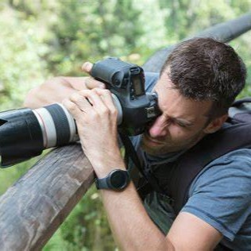

自我介绍
-
个人简介

姓名 | 李明
性别 | 男
出生 | 2004.10.04
居住 | 云澜市
职业 | 软件工程师
-
我的爱好
我热爱篮球，这项运动早已成为我生活中不可或缺的一部分。每当踏上球场，那种激情与挑战的氛围总能让我热血沸腾，乐此不疲。无论是精准的投篮、激烈的对抗，还是与队友间默契的配合，都让我深深感受到篮球带来的快乐与满足。
篮球不仅是一项体育运动，它更是我生活态度的体现。在球场上，我需要时刻保持高度的专注，无论是进攻时的快速突破，还是防守时的紧密盯防，都要求我反应迅速、判断准确。这种高强度的训练不仅锻炼了我的身体，更磨练了我的意志，让我学会了在面对困难和挑战时如何坚持不懈，勇往直前。
同时，篮球也是一种社交的媒介。通过这项运动，我结识了许多志同道合的朋友，我们共同分享胜利的喜悦，也一起承担失败的苦涩。在球队中，我学会了团队合作的重要性，每一次成功的配合背后，都是无数次失败与尝试的积累。这种经历让我们的友谊更加深厚，也让我们的团队更加团结。
总之，篮球不仅仅是我的爱好，它更是我释放压力、享受快乐的方式，也是我不断追求卓越、实现自我价值的途径。在未来的日子里，我将继续热爱这项运动，享受每一次跳跃、每一次投篮带来的快乐，让篮球成为我生命中一道亮丽的风景线，照亮我前行的道路。
-
我的故事
我的科技梦想始于云澜市那所充满活力与创新的科技大学附属小学。从那时起，我就被计算机世界的奥秘深深吸引，这份对科技的热爱一直伴随着我成长。
在大学期间，我选择了计算机科学与技术作为我的专业，并全身心投入其中。我积极参与各类科技竞赛，与团队成员紧密合作，将理论知识转化为实际项目。同时，我也参与了多个校企合作项目，这些经历不仅锻炼了我的专业技能，更让我学会了如何在实际工作中解决问题。
毕业后，我加入了“星际科技”公司，担任核心研发团队成员。在这里，我负责开发一款面向全球用户的社交应用。面对复杂多变的需求和激烈的市场竞争，我始终保持积极向上的态度，用我的专业知识和不懈努力为产品的成功贡献力量。
除了职业上的追求，我还热衷于社会公益。我深知技术的力量可以造福社会，因此我利用自己的技术专长，为偏远地区的学校捐赠并建立了计算机教室。这些教室不仅为孩子们提供了接触科技的机会，更激发了他们对知识的渴望和对未来的憧憬。
回望过去，我深感每一步成长都离不开对科技的热爱和不懈追求。未来，我将继续秉承这份初心，不断学习新知识，提升自我能力，在科技的道路上勇往直前。我相信，通过我的努力，我可以为社会贡献更多的价值，创造更加美好的未来。
- 联 系 我
旅行与摄影的交织之旅
作为一名业余摄影爱好者，我始终对捕捉生活中的美丽瞬间充满热情。在我看来，摄影不仅是一门技术，更是一种艺术，一种能够定格时间、凝固情感、传递美好的方式。
每当拿起相机，我都会沉浸在寻找美的过程中。无论是清晨的第一缕阳光，还是傍晚的最后一抹余晖；无论是繁华都市的喧嚣，还是偏远乡村的宁静，我都试图用镜头去捕捉那些令人心动的瞬间。我相信，每一个场景、每一个瞬间都有其独特的魅力，而摄影，就是将这些魅力定格下来，让更多人能够感受到其中的美好。
在拍摄过程中，我注重构图、光影和色彩的运用。我尝试从不同的角度和高度去拍摄，寻找最佳的视角和画面效果。同时，我也善于利用自然光和人造光来营造不同的氛围和情感，使照片更加生动、立体。在色彩方面，我追求自然、和谐，力求让照片的色彩更加真实、饱满。
虽然我只是一名业余爱好者，但我对摄影的热爱和追求从未停止。我不断学习新的摄影技巧和知识，参加各种摄影活动和比赛，与同行交流心得和经验。这些经历不仅让我更加深入地理解了摄影的魅力和价值，也让我在拍摄过程中不断成长和进步。
对我来说，摄影不仅仅是一种爱好，更是一种生活态度。它让我更加关注生活中的细节和美好，更加珍惜每一次的相遇和别离。我相信，在未来的日子里，我会继续用镜头去捕捉更多的美丽瞬间，用照片去讲述更多关于生活、关于情感的故事。